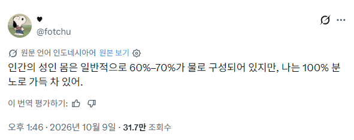
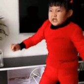

ㄹㅇ 임?

ㄹㅇ 임?
증오를 삼켜라 분노를 받아 들여라
삶은 곧 분노
물 35L, 탄소 20kg, 암모니아 4L, 석회 1.5kg, 인 800g, 염분 250g, 질산 칼륨 100g, 황 80g, 플루오린 7.5g, 철 5g, 규소 3g...
* 수수료 팔한짝 다리한짝
동생 하나랑 형 팔다리 한짝 빠졌어
분노가 아니라 분뇨겠지
I am the bone of my sword
분뇨?
킹 브레드레이 ㄷㄷㄷ
그래서 성인이 아님
야구졌나?
저기도 ai인가

성인이 아니라 중학교 2학년쯤 됐겠네
치와와는 50%의 분노와 50%의 증오로 구성되어있지
분뇨로 가득차있다라…
야구보는중인가
분노 만으로는 ATP를 생성하거나 소비 할 수도 없는 걸?
분노로 이루어져있으면 호문쿨루스 라스잖아